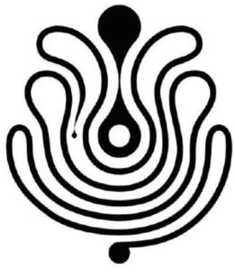

Trade Mark Journal No.2025/012 21 March 2025
WO0000001842516 (3,5,18,25,35,42)
Office of origin: Spain
Date of International Registration:3 October 2024
Date of designation in the UK:
3 October 2024

International priority date claimed: 5 April 2024
(Spain)
(4261326)
- Class 3
- Non-medicated cosmetics and toiletry preparations; Perfumery, essential oils; fragrances for personal use; eau de Cologne; eau de parfum; eau de toilette; scented water; perfumes; extracts of perfumes; non- medicated body care and cleansing preparations; non-medicated body lotions, milks and creams; deodorants for personal use; antiperspirants for personal use; non-medicated soaps; non- medicated soaps for personal use; non-medicated soaps in liquid, solid or gel form for personal use; non-medicated bath gel; non-medicated shower gel; non-medicated bath preparations; non- medicated bath salts; non-medicated skin care preparations; exfoliants; talcum powder, for toilet use; perfumed powders; wipes, cotton and cloths impregnated with non-medicated cosmetic lotions and for perfuming; non-medicated cosmetics, non-medicated toiletries and perfumery for the care and beauty of the eyelashes, eyebrows, eyes, lips and nails; non-medicated lip balm; nail polish; nail polish removers; adhesives for cosmetic use; non- medicated cosmetic preparations for slimming purposes; non-medicated hair preparations and treatments; non-medicated shampoos; make-up products; make-up removing products; non- medicated shaving preparations; non-medicated pre-shaving preparations; non-medicated after- shave preparations; non-medicated beauty preparations; non-medicated cosmetic sun-tanning and self-tanning preparations; cosmetic kits primarily containing mascara, eye shadows, eye pencils, blushers, lipsticks, eyebrow pencils, make-up, foundation and lip glosses; household fragrances; incense; aromatic potpourris; scented wood; products for perfuming linen; aromatic extracts.
- Class 5
- Pharmaceuticals, medical preparations; Hygienic and sanitary products for medical use.
- Class 18
- Leather and imitations of leather; Luggage and carrying bags; umbrellas and parasols; bags, briefcases and other carriers; straps for luggage, carrying bags, bags, briefcases and other carriers; handbags; evening bags; re-usable shopping bags; net bags for shopping; pouches; duffel bags; rucksacks; school bags; fanny packs; canvas bags; shoulder bags; cosmetic and vanity cases and purses, not fitted; travelling sets [leatherware]; cases of leather or leatherboard; carriers for suits, shirts and dresses; carrying cases for documents; portfolios; purses; chain mesh purses; wallets; key cases; card holders; credit card cases; boxes of leather or leatherboard; umbrella and parasol covers; leatherboard; fur and leather and imitations thereof, unworked, worked or semi-worked.
- Class 25
- Clothing, footwear, headwear; Formal footwear; casual footwear; footwear for sports; beach shoes; work shoes; rain shoes; bath shoes; indoor footwear; dance shoes; baby shoes; hats; caps and peaked caps; berets; hoods; visors; cap peaks; turbans; mantillas; wimples; toques [hats]; veils; headbands (clothing); cuffs [clothing]; inner socks for footwear; ready-made linings [parts of clothing]; shirt yokes; coats; layettes [clothing]; bathrobes; anoraks; neckwear; headbands being clothing; sweatbands; dressing gowns; overalls; robes; bathing suits; bikinis; Bermuda shorts; blazers; blouses; boas; scarves; caftans; socks and stockings; body warmers (clothing); shirts; T-shirts; nightgowns; hooded pullovers; capes; blousons; waistcoats; shawls and stoles; jackets; morning coats; tracksuits; stuff jackets; belts (clothing); petticoats; twin sets; combinations [clothing]; neckties; bustiers; corsets; tuxedos; skirts; foulards; gabardines; gloves (clothing); jerseys; lingerie; leotards and tights; garters; muffs (clothing); mantles; silk shawls; mittens; jump suits; money belts (clothing); ear muffs; bow ties; trousers; beach wraps; parkas; balaclavas; kerchiefs (clothing); pocket squares (clothing); shoulder scarves; head scarves; bandanas [neckerchiefs]; shirt fronts; pelisses; dungarees; jumper dresses; furs [clothing]; pyjamas; polo shirts; ponchos; evening wear; sportswear; knitwear; denim clothing; babies' undergarments; waterproof clothing; pullovers; kimonos; cardigans; ready-made clothing; clothing of leather; clothing of imitations of leather; maternity clothing; children's clothing; baby clothing; beach clothes; outer clothing; clothing made of fur; casual wear; underwear; motorists' and motorcyclists' clothing; negligees; over-trousers; overcoats; sweatshirts; thongs; tops [clothing]; suits; duffel coats; tunics; uniforms; dresses; evening gowns; wedding dresses; men's suits; evening suits; women's suits; ballet suits; loungewear; weatherproof clothing.
- Class 35
- Retail and wholesale services, including those provided in stores, via global computer networks, by mail order and catalogue, of the following goods: soaps, perfumery, cosmetics, beauty products, sanitary products, perfumed candles, scented candles, pharmaceutical products, spectacles, jewellery, imitation jewellery, precious stones, horological articles, clothing, footwear, headwear, fashion accessories, imitation leather, furs, artificial furs, animal skins and hides, trunks, suitcases, bags, umbrellas, parasols and harness and saddlery.
- Class 42
- Industrial design; Product research, design and development; research and development in the field of perfumery, cosmetics and pharmaceutical products; research and formulation of fragrances, cosmetics and pharmaceutical products; design and creation of packaging for fragrances, cosmetics and pharmaceutical products; dress designing; design of spectacles, jewellery, imitation jewellery, precious stones, horological articles, clothing, footwear, accessories, handbags, leatherware, fashion accessories and headwear; consultancy services in relation to the aforementioned services.
Antonio Puig, S.A.
Representative: ELZABURU, Edificio Torre de Cristal,, Paseo de la Castellana, 259C, planta 28, E-28046 Madrid, SPAIN